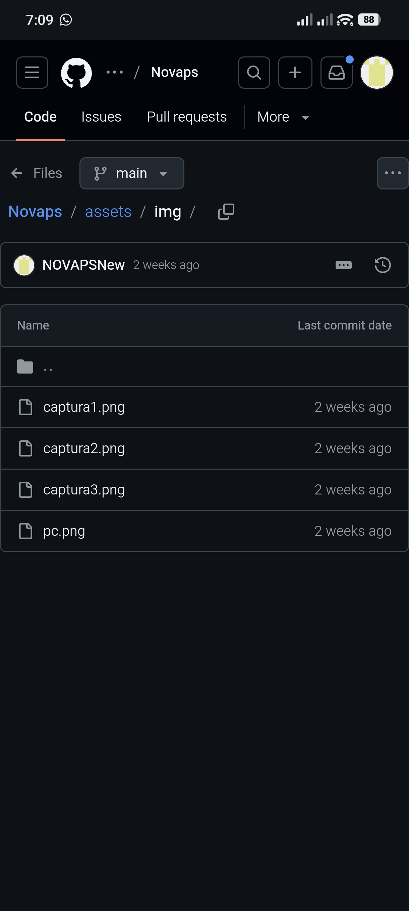
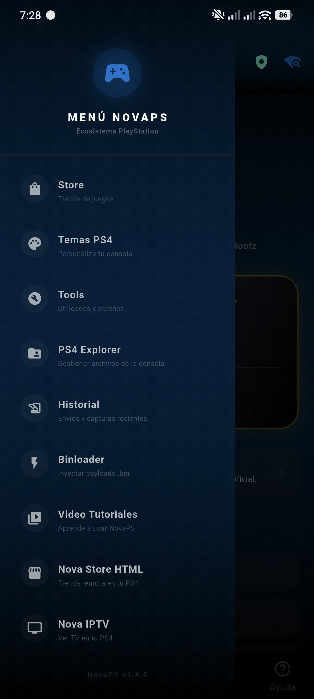
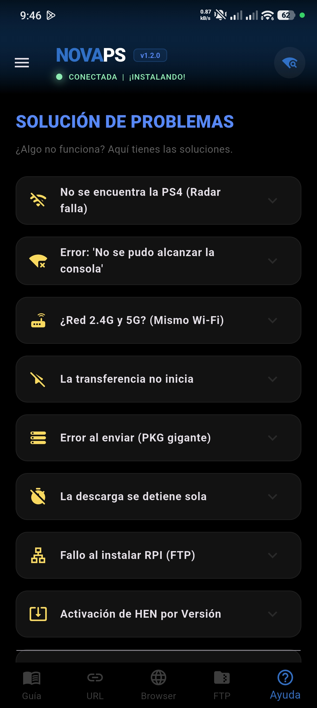

App tipo navegador que envía enlaces de descarga a tu PS4 para instalar juegos (.pkg) directamente, sin descargarlos en tu teléfono o tener que pasarlo por USB.
¿Se canceló tu descarga? No hay problema. Sigue estos pasos para recuperar tu progreso:
Dale a reanudar y luego pausa en tu consola.
Entra al Historial de NovaPS y selecciona el último enlace.
Dale a descargar y reanuda en tu PS4 para volver al porcentaje que tenías.



📌 RECOMENDACIÓN IMPORTANTE
Ver los vídeos tutoriales y leer el apartado de ayuda dentro de la aplicación.
Totalmente gratis, sin anuncios y libre de virus (comprobado con VirusTotal).